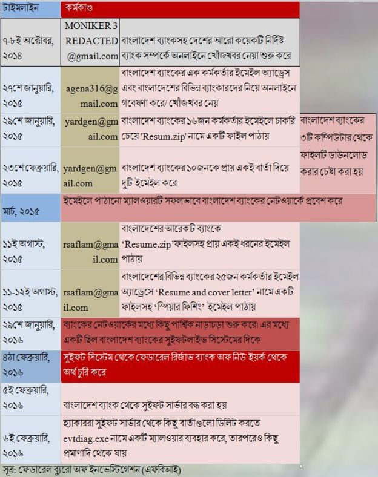

ঢাকা, সোমবার, 4 January 2019, ২৯ পৌষ ১৪২৫, ৫ জমাদিউল আউয়াল ১৪৪০ হিজরী
Online Edition

'চাকরি চেয়ে' বাংলাদেশ ব্যাংকের অর্থ যেভাবে সরিয়েছিল হ্যাকাররা'
প্রকাশিত: ৩১ জানুয়ারি ২০১৯ - ১৯:০০

বাংলাদেশের রিজার্ভ চুরির ঘটনা সারা বিশ্বে তোলপাড় সৃষ্টি করেছিল।
সংগ্রাম অনলাইন : ২০১৪ সাল থেকেই বাংলাদেশের কেন্দ্রীয় ব্যাংক বাংলাদেশ ব্যাংকসহ দেশটির কয়েকটি বাণিজ্যিক ব্যাংক নিয়ে অনলাইনে গবেষণা শুরু করেছিল হ্যাকাররা। পরে ২০১৬ সালের ৪ঠা ফেব্রুয়ারিতে ফেডারেল রিজার্ভ ব্যাংক অব নিউইয়র্কে রক্ষিত বাংলাদেশে ব্যাংকের অ্যাকাউন্ট থেকে ১০ কোটি ১০ লাখ ডলার (যা বাংলাদেশী মুদ্রায় ৮১০ কোটি টাকার সমপরিমান) চুরি করতে সমর্থ হয়।
ঠিক কীভাবে এই চুরির কাজটি হয়েছিল, সে বিষয়ে একটি ব্যাখ্যা দিয়েছে মার্কিন কেন্দ্রীয় তদন্ত ব্যুরো বা এফবিআই। যুক্তরাষ্ট্রে গত বছরে ক্যালিফোর্নিয়া ডিস্ট্রিক্ট কোর্টে এফবিআই একটি ফৌজদারি মামলার নথিতে এই ব্যাখ্যা দেয়।
রিজার্ভ চুরির ওই ঘটনা সারাবিশ্বে তোলপাড় সৃষ্টি করলেও বাংলাদেশের পক্ষ থেকে গত তিনবছরেও তদন্ত প্রতিবেদন প্রকাশ করা হয়নি।
তবে মার্কিন গোয়েন্দা সংস্থার ওই নথি অনুযায়ী, ২০১৪ সালের ৭ই অক্টোবর থেকে বাংলাদেশের বিভিন্ন ব্যাংককে টার্গেট বানিয়ে আসছে হ্যাকাররা।
সেখানে বাংলাদেশ ব্যাংকসহ বিশ্বজুড়ে বেশকয়েকটি সাইবার হামলার পেছনে 'পার্ক জিন হিয়ক' নামে উত্তর কোরিয়ার এক নাগরিককে দায়ী করে এফবিআই।
সংস্থাটি বাংলাদেশ ব্যাংকের ডিজিটাল যন্ত্রপাতি পরীক্ষা-নিরীক্ষা এবং ইলেকট্রনিক তথ্য-প্রমাণাদি থেকে জানতে পেরেছে রিজার্ভ চুরির জন্য সিস্টেমে অনুপ্রবেশ করতে মূলত চারটি ইমেইল অ্যাকাউন্ট ব্যবহার করেছিল হ্যাকাররা।
সেগুলো হলো: watsonhenny@gmail.com, yardgen@gmail.com, এবং এ দুটির সাথে সংশ্লিষ্ট rasel.aflam@gmail.com, এবং rsaflam@gmail.com, - অ্যাকাউন্ট দুটি। এসব ইমেইল থেকে মোটামুটি একই ধরনের - চাকুরির সুযোগ চেয়ে - বার্তা পাঠানো হয় বাংলাদেশ ব্যাংকের কর্মকর্তাদের কাছে - এমনটাই দাবী করছে এফবিআই।
ইমেইলে কী বার্তা দিয়েছিল হ্যাকাররা?
চাকরি প্রার্থীদের মতোই কিছু দরখাস্ত বাংলাদেশ ব্যাংকের বিভিন্ন কর্মকর্তার ইমেইলে আসা শুরু করে ২০১৫ সালের শুরুর দিকে। জন্মবৃত্তান্ত বা সিভি এবং কাভার লেটারসহ ভাইভার জন্য আশা করা হচ্ছিল 'আবেদনকারীদের' পক্ষ থেকে।
তবে এগুলো যে মোটেই চাকরির জন্য ছিল না, সেটি প্রমাণ হয়েছে বাংলাদেশ ব্যাংকের রিজার্ভ চুরির পর।
এফবিআই-এর প্রতিবেদনে ইমেইলের যে কপি তুলে ধরা হয়েছে, সেটি এরকম: আমি রাসেল আহলাম
আপনার প্রতিষ্ঠানের একজন অংশ হওয়ার ব্যাপারে আমি খুবই উৎসাহী এবং আশা করছি একটি ব্যাক্তিগত সাক্ষাতকারের মাধ্যমে আমি আমার বিষয়টি আপনাকে বিস্তারিত জানাতে পারবো।
এখানে আমার রিজিউম এবং কাভার লেটার দেওয়া হলো। রিজিউম এব কাভার লেটারের ফাইল
আপনার সময়ের জন্য এবং বিবেচনার জন্য আপনাকে অগ্রীম ধন্যবাদ।
কেন এ ধরনের বার্তা ?
এফবিআই-এর নথি বলছে, বাংলাদেশ ব্যাংকের কম্পিউটার নেটওয়ার্কে প্রাথমিকভাবে ঢুকে পড়ার জন্য সবগুলো ইমেইল অ্যাকাউন্ট থেকে প্রায় একই রকম অনেকগুলো 'স্পিয়ার ফিশিং' ইমেইল পাঠানো হয়েছিল।
ছদ্মবেশে প্রতারণা ও জালিয়াতি করে অর্থ হাতিয়ে নিতে মূলত 'স্পিয়ার ফিশিং' ইমেইল ব্যবহার করা হয়।
নথি অনুযায়ী, অনলাইনে চাকরির কাভার লেটার এবং পিডিএফ ফাইল থেকে হ্যাকিং বিষয়ে গবেষণার পর yardgen@gmail.com জিমেইল অ্যাড্রেস থেকে ২০১৫ সালের ২৯শে জানুয়ারি বাংলাদেশ ব্যাংকের ১৬জন কর্মকর্তার ইমেইলে বার্তা পাঠানো হয়।
প্রত্যেকটি বার্তায় চাকরি চেয়ে 'Resum.zip' ফাইল পাঠানো হয় যেখানে একটি লিংক দিয়েছিলো হ্যাকাররা।
ঐ বছরের ২৩শে ফেব্রুয়ারি ওই একই ইমেইল অ্যাড্রেস থেকে কেন্দ্রীয় ব্যাংকটির ১০জনকে দুটি ইমেইল করা হয়, যার বার্তাও একই রকম। এখানে এমন একটি লিংক দেওয়া হয়, যেটিতে ক্লিক করলে অন্য একটি ওয়েবসাইটে নিয়ে যাবে।
এই অ্যাড্রেস থেকে পাঠানো একটি ইমেইল বাংলাদেশ ব্যাংকের নিজস্ব ইমেইল (শেষে bb.org.bd ) ব্যবহারকারী একজনের অ্যাড্রেস ছিল বলে জানাচ্ছে এফবিআই।
২৭শে জানুয়ারি অজ্ঞাতনামা একজন ব্যক্তি বাংলাদেশ ব্যাংকের ঔ কর্মকর্তার ইমেইল অ্যাড্রেস এবং বাংলাদেশের বিভিন্ন ব্যাংকারদের নিয়ে অনলাইনে আরেকটি গবেষণা করেছিল। ওই ব্যাক্তি agena316@gmail.com ইমেইল ব্যবহার করে তার ফেসবুক অ্যাকাউন্ট খুলেছিল, যেখানে থেকে সনি পিকচার্স এন্টারটেইনমেন্ট এবং এএমসি থিয়েটার হ্যাক করতে 'স্পিয়ার ফিশিং' ইমেইল বার্তা পাঠানো হয়েছিল বলে এফবিআই-এর দাবী।
পরবর্তীতে ১১ই অগাস্ট rsaflam@gmail.com থেকে বাংলাদেশের আরেকটি ব্যাংকে প্রায় একই ধরনের ইমেইল পাঠানো হয়। কিন্তু এখানে ফাইলের শেষে 'Resume.zip' লেখা ছিল। এই ইমেইল অ্যাড্রেসটি 'রাসেল আহলাম' নামে নিবন্ধিত।
ওইদিন এবং পরের দিন (১১ ও ১২ই অগাস্ট) বাংলাদেশের বিভিন্ন ব্যাংকের ২৫জন কর্মকর্তার ইমেইল অ্যাড্রেসে এই 'স্পিয়ার ফিশিং' ইমেইল পাঠানো হয়। তবে এসব ইমেইলের যে লিংক দেওয়া হয়েছিল তাতে 'Resume and cover letter' লেখা ছিল।
বাংলাদেশ ব্যাংকের রিজার্ভ চুরি হওয়ার টাইমলাইন।
'ফাইল খুলেই বিপদে বাংলাদেশ ব্যাংক'
এফবিআই-এর ফরেনসিক রিপোর্ট বলছে, ২০১৫ সালের ২৯শে জানুয়ারি থেকে ২৪শে ফেব্রুয়ারির মধ্যে yardgen@gmail.com অ্যাড্রেস থেকে আসা 'Resum.zip' ফাইলটি বাংলাদেশ ব্যাংকের অন্তত তিনটি কম্পিউটার থেকে ডাউনলোড করার চেষ্টা করা হয়।
এভাবে মার্চের মধ্যে ইমেইলে পাঠানো ম্যালওয়ারটি সফলভাবে বাংলাদেশ ব্যাংকের নেটওয়ার্কে প্রবেশ করে। সেখানে এটি একটি 'ফেইক টিএলএস (ট্রান্সপোর্ট লেয়ার সিকিউরিটি)' তৈরি করে, যা দেখে মনে হবে না কেউ নেটওয়ার্কে অনুপ্রবেশ করেছে।
এই ম্যালওয়ারটি ফাইল স্থানান্তর, zip ফাইল তৈরি করতে সক্ষম ছিল। ম্যালওয়ারটিতে তিনটি আইপি অ্যাড্রেস প্রোগাম করা ছিল বলে এফবিআই-এর নথি বলছে।
এক বছর পর অর্থ্যাৎ ২০১৬ সালের ২৯শে জানুয়ারি। জালিয়াতির মাধ্যমে অর্থ সরানোর আগে ব্যাংকের নেটওয়ার্কের মধ্যে কিছু পার্শ্বিক নাড়াচড়া শুরু করে। এর মধ্যে একটি ছিল বাংলাদেশ ব্যাংকের সুইফটলাইভ সিস্টেমের দিকে।
ব্যাংকের সুইফট প্রক্রিয়ার প্রধান অংশই হলো এই সিস্টেম। এটি সুইফট অ্যালায়েন্স অ্যাকসেস অ্যাপলিকেশন ব্যবহার করেছিল, যা ছিল সুইফট গ্রাহকদের পরিচালিত প্রবেশপথ। এটি মূলত অর্থনৈতিক লেনদেন নিশ্চিত করতে বার্তা আদান-প্রদান করে।
সুইফট বার্তা গ্রহণ করে অ্যাপটি বার্তার একটি কপি স্থানীয়ভাবে রেকর্ড করে ফাইল হিসেবে ফরম্যাট করতে বা প্রিন্টারে প্রিন্ট করতে পারতো। অথবা আরো তথ্য দিয়ে আলাদা ডেটাবেজও তৈরি করতে পারতো।
অনলাইন আপডেট
- 'চাকরি চেয়ে' বাংলাদেশ ব্যাংকের অর্থ যেভাবে সরিয়েছিল হ্যাকাররা৩১ জানুয়ারি ২০১৯
-
সৌদি যুবরাজকে জাতিসংঘ মহাসচিবের ফোন'
প্রকাশিত: বৃহস্পতিবার ৩১ জানুয়ারি ২০১৯ -
ভারতের রোহিঙ্গা লজ্জা
প্রকাশিত: বৃহস্পতিবার ৩১ জানুয়ারি ২০১৯ -
কোপার আগেই জাতীয় দলে মেসি!
প্রকাশিত: বৃহস্পতিবার ৩১ জানুয়ারি ২০১৯ - কুমিল্লা জেলায় লীড ব্যাংক হিসেবে ফার্স্ট সিকিউরিটি ইসলামী ব্যাংকের স্কুল ব্যাংকিং কনফারেন্স অনুষ্ঠিত ১২ জানুয়ারি ২০১৯ - ২০:২৩
- দেখে আসুন জাতীয় বিজ্ঞান ও প্রযুক্তি জাদুঘর ১২ জানুয়ারি ২০১৯ - ২০:২৩
- আজ থেকে আবার ঢাকায় ফিরছে বিপিএল বৃহস্পতিবার ৩১ জানুয়ারি ২০১৯ - ২০:২৩
- কম্পিউটার ঠিকঠাক রাখার উপায় বৃহস্পতিবার ৩১ জানুয়ারি ২০১৯ - ২০:২৩
- গবেষণা রিপোর্ট: মোবাইলের ব্যাটারী থেকে নির্গত গ্যাস শরীরের জন্য ক্ষতিকর বৃহস্পতিবার ৩১ জানুয়ারি ২০১৯ - ২০:২৩
- বিদেশিদের সার্টিফিকেট নিয়ে তামাশার নির্বাচনের লজ্জা ঢাকা যাবে না: সাকইফুল হক ১২ জানুয়ারি ২০১৯ - ২০:২৩
- চাঁদের উল্টো পিঠ থেকে ছবি পেতে শুরু করেছে চীন ১২ জানুয়ারি ২০১৯ - ২০:২৩
- সুবর্ণচর মানে সমগ্রদেশ বেঁচে থাকবার অধিকার ১২ জানুয়ারি ২০১৯ - ২০:২৩